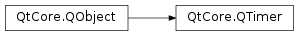

QTimer¶
Synopsis¶
Functions¶
- def
interval() - def
isActive() - def
isSingleShot() - def
remainingTime() - def
setInterval(msec) - def
setSingleShot(singleShot) - def
setTimerType(atype) - def
timerId() - def
timerType()
Static functions¶
- def
singleShot(arg__1, arg__2) - def
singleShot(msec, receiver, member) - def
singleShot(msec, timerType, receiver, member)
Detailed Description¶
The
PySide2.QtCore.QTimerclass provides repetitive and single-shot timers.The
PySide2.QtCore.QTimerclass provides a high-level programming interface for timers. To use it, create aPySide2.QtCore.QTimer, connect itstimeout()signal to the appropriate slots, and callPySide2.QtCore.QTimer.start(). From then on, it will emit thetimeout()signal at constant intervals.Example for a one second (1000 millisecond) timer (from the Analog Clock example):
QTimer *timer = new QTimer(this); connect(timer, SIGNAL(timeout()), this, SLOT(update())); timer->start(1000);From then on, the
update()slot is called every second.You can set a timer to time out only once by calling
PySide2.QtCore.QTimer.setSingleShot()(true). You can also use the staticQTimer.singleShot()function to call a slot after a specified interval:QTimer.singleShot(200, self.updateCaption)In multithreaded applications, you can use
PySide2.QtCore.QTimerin any thread that has an event loop. To start an event loop from a non-GUI thread, useQThread.exec(). Qt uses the timer’sthread affinityto determine which thread will emit thePySide2.QtCore.QTimer.timeout()signal. Because of this, you must start and stop the timer in its thread; it is not possible to start a timer from another thread.As a special case, a
PySide2.QtCore.QTimerwith a timeout of 0 will time out as soon as all the events in the window system’s event queue have been processed. This can be used to do heavy work while providing a snappy user interface:timer = QTimer(self) timer.timeout.connect(self.processOneThing) timer.start()From then on,
processOneThing()will be called repeatedly. It should be written in such a way that it always returns quickly (typically after processing one data item) so that Qt can deliver events to the user interface and stop the timer as soon as it has done all its work. This is the traditional way of implementing heavy work in GUI applications, but as multithreading is nowadays becoming available on more and more platforms, we expect that zero-millisecondPySide2.QtCore.QTimerobjects will gradually be replaced byPySide2.QtCore.QThreads.
Accuracy and Timer Resolution¶
The accuracy of timers depends on the underlying operating system and hardware. Most platforms support a resolution of 1 millisecond, though the accuracy of the timer will not equal this resolution in many real-world situations.
The accuracy also depends on the
timer type. ForQt.PreciseTimer,PySide2.QtCore.QTimerwill try to keep the accuracy at 1 millisecond. Precise timers will also never time out earlier than expected.For
Qt.CoarseTimerandQt.VeryCoarseTimertypes,PySide2.QtCore.QTimermay wake up earlier than expected, within the margins for those types: 5% of the interval forQt.CoarseTimerand 500 ms forQt.VeryCoarseTimer.All timer types may time out later than expected if the system is busy or unable to provide the requested accuracy. In such a case of timeout overrun, Qt will emit activated() only once, even if multiple timeouts have expired, and then will resume the original interval.
Alternatives to QTimer¶
An alternative to using
PySide2.QtCore.QTimeris to callQObject.startTimer()for your object and reimplement theQObject.timerEvent()event handler in your class (which must inheritPySide2.QtCore.QObject). The disadvantage is thatPySide2.QtCore.QTimer.timerEvent()does not support such high-level features as single-shot timers or signals.Another alternative is
PySide2.QtCore.QBasicTimer. It is typically less cumbersome than usingQObject.startTimer()directly. See Timers for an overview of all three approaches.Some operating systems limit the number of timers that may be used; Qt tries to work around these limitations.
-
class
PySide2.QtCore.QTimer([parent=nullptr])¶ Parameters: parent – PySide2.QtCore.QObjectConstructs a timer with the given
parent.
-
PySide2.QtCore.QTimer.interval()¶ Return type: PySide2.QtCore.intSee also
-
PySide2.QtCore.QTimer.isActive()¶ Return type: PySide2.QtCore.boolReturns
trueif the timer is running (pending); otherwise returns false.
-
PySide2.QtCore.QTimer.isSingleShot()¶ Return type: PySide2.QtCore.bool
-
PySide2.QtCore.QTimer.remainingTime()¶ Return type: PySide2.QtCore.int
-
PySide2.QtCore.QTimer.setInterval(msec)¶ Parameters: msec – PySide2.QtCore.intSee also
-
PySide2.QtCore.QTimer.setSingleShot(singleShot)¶ Parameters: singleShot – PySide2.QtCore.boolSee also
-
PySide2.QtCore.QTimer.setTimerType(atype)¶ Parameters: atype – PySide2.QtCore.Qt.TimerTypeSee also
-
static
PySide2.QtCore.QTimer.singleShot(msec, timerType, receiver, member)¶ Parameters: - msec –
PySide2.QtCore.int - timerType –
PySide2.QtCore.Qt.TimerType - receiver –
PySide2.QtCore.QObject - member – str
This is an overloaded function.
This static function calls a slot after a given time interval.
It is very convenient to use this function because you do not need to bother with a
PySide2.QtCore.QObject.timerEvent()or create a localPySide2.QtCore.QTimerobject.The
receiveris the receiving object and thememberis the slot. The time interval ismsecmilliseconds. ThetimerTypeaffects the accuracy of the timer.See also
- msec –
-
static
PySide2.QtCore.QTimer.singleShot(msec, receiver, member) Parameters: - msec –
PySide2.QtCore.int - receiver –
PySide2.QtCore.QObject - member – str
This static function calls a slot after a given time interval.
It is very convenient to use this function because you do not need to bother with a
PySide2.QtCore.QObject.timerEvent()or create a localPySide2.QtCore.QTimerobject.Example:
from PySide2.QtCore import QApplication, QTimer def main(): app = QApplication([]) QTimer.singleShot(600000, app, SLOT('quit()')) ... return app.exec_()
This sample program automatically terminates after 10 minutes (600,000 milliseconds).
The
receiveris the receiving object and thememberis the slot. The time interval ismsecmilliseconds.- msec –
-
static
PySide2.QtCore.QTimer.singleShot(arg__1, arg__2) Parameters: - arg__1 –
PySide2.QtCore.int - arg__2 –
PyCallable
- arg__1 –
-
PySide2.QtCore.QTimer.start(msec)¶ Parameters: msec – PySide2.QtCore.intStarts or restarts the timer with a timeout interval of
msecmilliseconds.If the timer is already running, it will be
stoppedand restarted.If
PySide2.QtCore.QTimer.singleShot()is true, the timer will be activated only once.
-
PySide2.QtCore.QTimer.start() This function overloads .
Starts or restarts the timer with the timeout specified in
PySide2.QtCore.QTimer.interval().If the timer is already running, it will be
stoppedand restarted.If
PySide2.QtCore.QTimer.singleShot()is true, the timer will be activated only once.
-
PySide2.QtCore.QTimer.stop()¶ Stops the timer.
See also
-
PySide2.QtCore.QTimer.timerId()¶ Return type: PySide2.QtCore.intReturns the ID of the timer if the timer is running; otherwise returns -1.
-
PySide2.QtCore.QTimer.timerType()¶ Return type: PySide2.QtCore.Qt.TimerTypeSee also
© 2018 The Qt Company Ltd. Documentation contributions included herein are the copyrights of their respective owners. The documentation provided herein is licensed under the terms of the GNU Free Documentation License version 1.3 as published by the Free Software Foundation. Qt and respective logos are trademarks of The Qt Company Ltd. in Finland and/or other countries worldwide. All other trademarks are property of their respective owners.